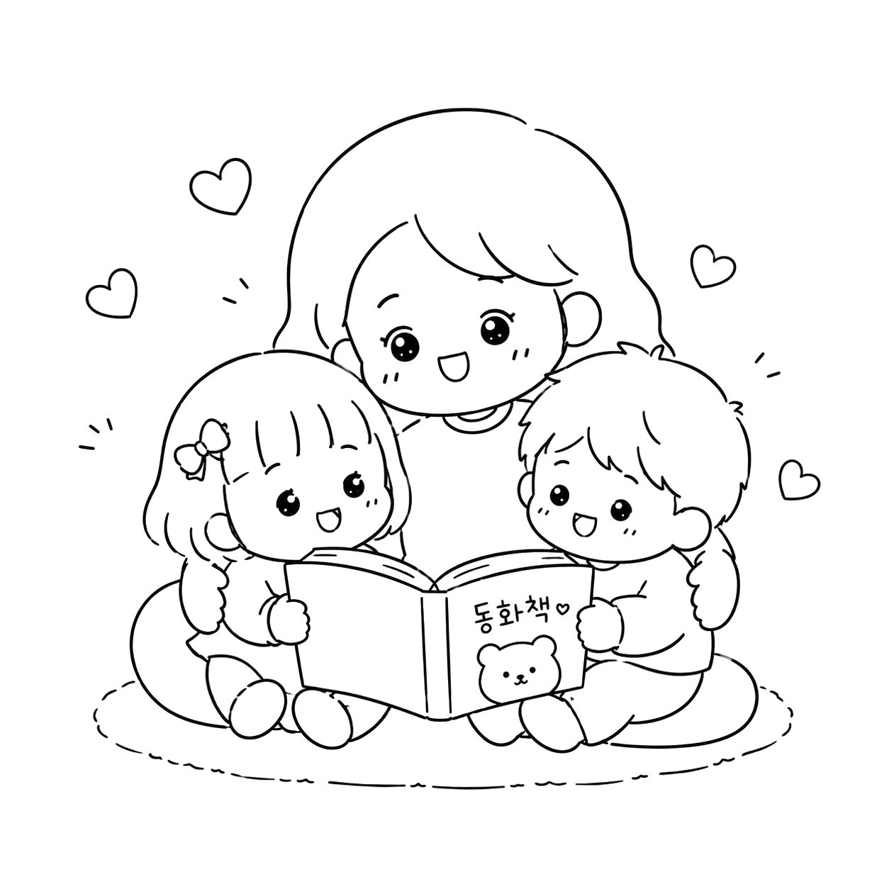
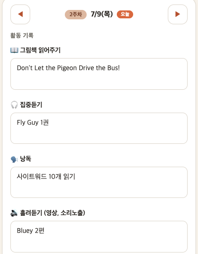
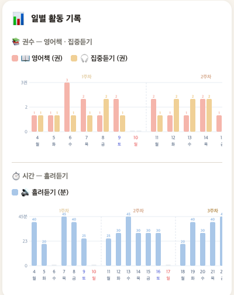

"빠른 아이보다 오래 가는 아이가 목표입니다"
옆집 아이와 비교하지 않아요.
우리 아이의 현재 위치를 함께 확인하고,
아이 성향에 맞는 오래 가는 영어 루틴을 만들어요.
월 50,000원으로 시작해요
리딩반 신청하기신청 폼 작성은 5분이면 충분해요
책도 사고, 영상도 틀어주는데… 뭔가 빠진 것 같은 느낌. 빠진 건 교재가 아니라 방향과 꾸준함이에요.
차이는 딱 하나, 함께 봐주는 사람이 있느냐예요.
아이마다 출발점이 달라요. 지금 어디에 있든, 우리 아이의 속도로 한 칸씩 올라가요.
영어가 '공부'가 아니라 '재미'가 되는 시간. 거부감 없이 소리에 노출돼요.
자주 나오는 단어를 눈에 익혀서 읽기의 기초를 다져요.
"엄마, 나 이거 읽었어!" 처음으로 혼자 읽는 성취감을 맛봐요.
집중듣기와 함께 읽기 체력을 차곡차곡 쌓아가요.
그림 없이도 이야기에 빠져드는 진짜 리더가 돼요. 여기부터는 아이가 스스로 가요.
거창한 계획은 오래 못 가요. 10분씩 세 가지로 가볍게 시작하고, 아이가 익숙해지면 조금씩 늘려가요.
아이가 좋아하는 영어 영상으로 재미있게 소리에 노출돼요.
아이 레벨에 맞게 골라드린 그림책·리더스를 함께 읽어요.
소리를 따라 글자를 짚으며 들어요. 읽기 체력이 여기서 자라요.
오늘 한 만큼 진행표에 체크하면 끝 ✅
10분씩, 점차 늘려가요.
혼자 하는 엄마표영어가 무너지는 이유는 딱 하나 — 아무도 봐주지 않아서예요.
매주 우리 아이에게 딱 맞는 영어책 추천 + 영상 추천 + 워크지를 보내드려요. 문장 만들기를 연습할 아이에겐 문장 만들기 워크지, 글쓰기를 시작한 아이에겐 영어 글쓰기 워크지 — 같은 리딩반이어도 받는 자료는 아이마다 달라요.
매주 아이가 읽은 책, 들은 시간, 아이의 반응까지 한눈에 보이는 진행표에 기록해요. 어렵지 않아요, 체크만 하면 돼요.
📱 실제 진행표 앱 화면이에요 (예시 데이터)

그림책 · 집중듣기 · 낭독 · 흘려듣기를 매일 앱에 기록해요
진행표를 보고 소시네가 직접 피드백을 드려요. 지금 잘 가고 있는지, 다음 주엔 뭘 바꾸면 좋을지 — 막히기 전에 방향을 잡아드려요.
한 달 동안 몇 권을 읽었는지, 어떤 활동을 얼마나 했는지 — 매일의 기록을 그래프로 정리해 매달 한 번 보내드려요. 감이 아니라 기록으로 아이의 성장이 보여요.
📊 실제 리포트 그래프 화면이에요 (예시 데이터)

읽은 권수 · 들은 시간이 자동으로 정리돼요
복잡한 건 하나도 없어요. 신청하고 나면 이 순서 그대로 흘러가요.
5분이면 돼요. 확인 후 시작 안내를 보내드려요.
아이의 현재 위치와 성향을 함께 확인하고, 출발점을 정해요.
우리 아이용 영어책 추천 + 영상 추천 + 워크지를 받아요.
영상 10분, 영어책 10분, 집중듣기 10분 하고 앱에 기록해요.
진행표를 보고 소시네가 다음 주 방향을 잡아드려요.
한 달의 기록을 그래프로 정리해 보내드려요. 그리고 3~6을 반복 — 이게 전부예요.